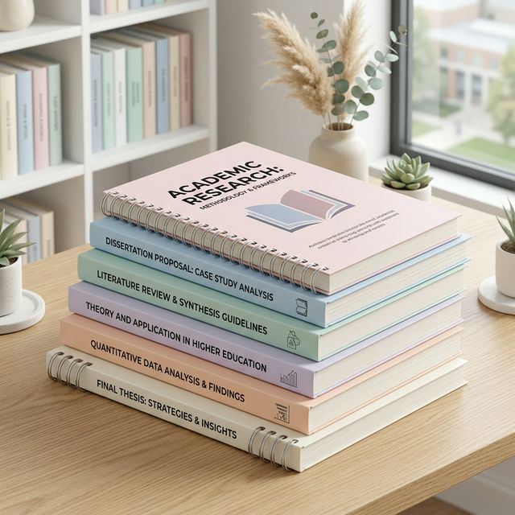

무거운 전공책, 10분 만에 아이패드 속으로!
한양대 1등 셀프 북스캔 매장
초고속 스캐너와 전문가의 깔끔한 재단/제본으로 스터디 효율을 극대화하세요. 저작권법을 완벽히 준수하는 안전한 셀프 스캔 공간, 스캔데이입니다.
스캔 이용방법 확인하기원격 스캔처럼 간편한
3-Step 셀프 북스캔
1. 깔끔한 단행본 재단: 직원이 안전하게 책의 등 부분을 1mm 오차 없이 깔끔하게 커팅합니다.
2. 초고속 셀프 스캔: 초고속 양면 스캐너를 렌탈하여 고객님이 직접 간편하게 PDF 파일로 변환합니다. (저작권법 준수용)
3. 프리미엄 스프링 제본: 스캔 작업이 완료된 책의 페이지를 검수한 후, 튼튼하고 예쁜 스프링으로 완벽히 묶어 드립니다.
왕십리역 도보 5분,
가장 빠르고 쾌적한 북스캔 공간
수많은 한양대/한양여대 학생들과 수험생들이 매 학기 스캔데이 왕십리점을 찾는 이유는 명확합니다. 최신식 초고속 장비로 대기 시간을 줄이고, 전문가 수준의 깔끔한 퀄리티로 여러분의 아이패드에 교재를 담아드립니다.

스캔데이가 제공하는 완벽한 서비스
초고속 셀프 북스캔
수백 페이지의 전공 서적도 눈 깜짝할 새 스캔이 완료됩니다. 직관적인 소프트웨어를 통해 누구나 쉽게 고해상도 PDF 태블릿 학습 자료를 만들 수 있습니다.
깔끔한 스프링 분철 및 제본
단순 접착이 아닌 튼튼한 고급 스프링 제본을 제공합니다. 원하는 분량만큼 깔끔하게 분철(나누기)하여 책의 활용도와 휴대성을 비약적으로 높여 드립니다.
원스톱 과제 프린트 및 복사
북스캔뿐만 아니라 일반 문서 출력, 복사 서비스까지 매장 내에서 원스톱으로 해결하실 수 있습니다. 선명한 레이저 출력 품질을 보장합니다.
투명하고 합리적인 스캔데이 요금표
| 서비스 항목 | 상세 설명 | 이용 요금 |
|---|---|---|
| 셀프 북스캔 (스캐너 대여) | 30분 단위 기본 이용 (초고속 스캐너 풀 세트 제공) | 6,000원 / 30분당 |
| 책 재단 (커팅) | 1권당 기본 재단 비용 (책의 등 부분을 정밀하게 잘라냅니다) | 1,000원 / 1권당 |
| 스프링 분철 / 제본 | 재단된 책을 튼튼하고 깔끔한 스프링으로 엮어드립니다 | 3,000원 / 1권당 |
| OCR 문자인식 (검색 가능 PDF) | PDF 내의 텍스트를 검색/드래그 할 수 있도록 변환 | 1,000원 / 1파일(권)당 |
| 흑백 / 컬러 프린트 | 과제물 일반 레이저 출력 및 복사 | 흑백 50원 / 컬러 100~300원 |
* 가격은 매장 상황에 따라 변동될 수 있습니다. 대량 작업 시 매장으로 직접 문의주세요.
오프라인 예약 및 방문 안내
셀프 스캔은 저작권법 준수를 위해 고객의 직접 조작이 필수입니다.
왕십리역에서 가장 가까운 스캔데이로 방문해 주세요!
초행길이시더라도 네이버 지도를 켜고 찾아오시면 아주 쉽게 발견하실 수 있습니다.
* 예약과 문의사항은 네이버 플레이스 [톡톡 문의] 혹은 유선으로 부탁드립니다.